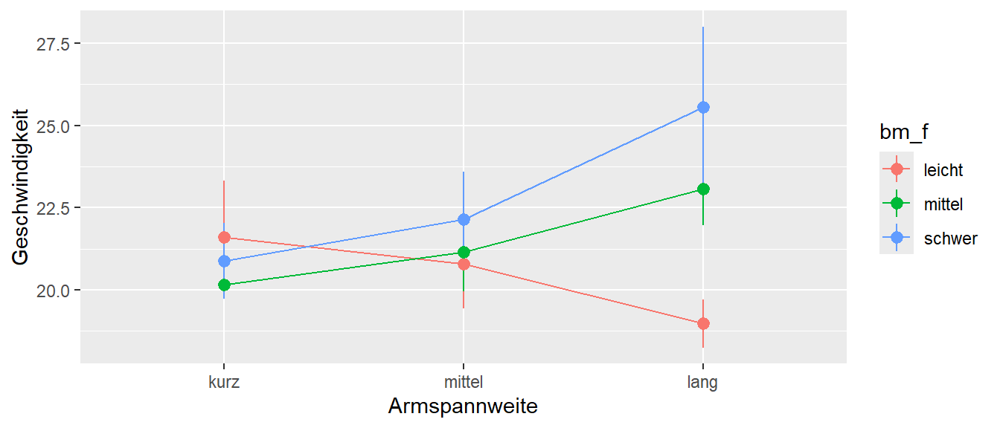
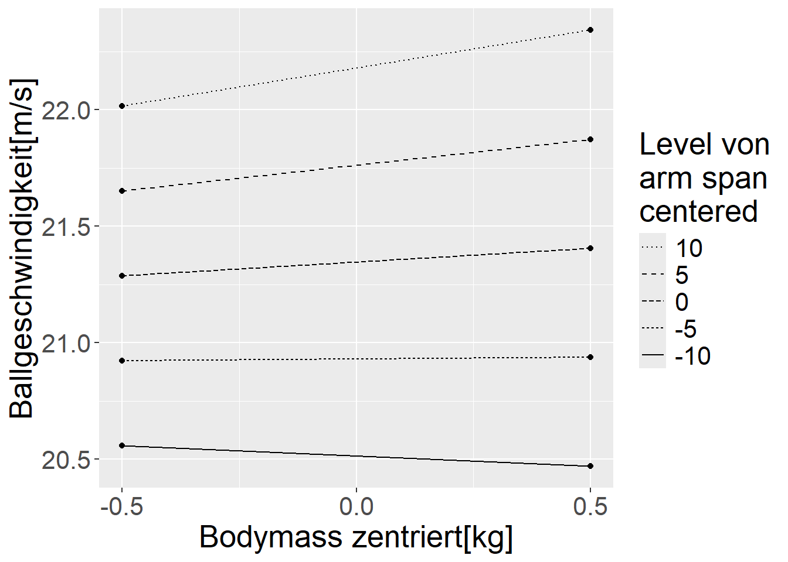
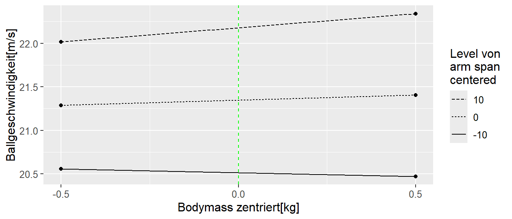
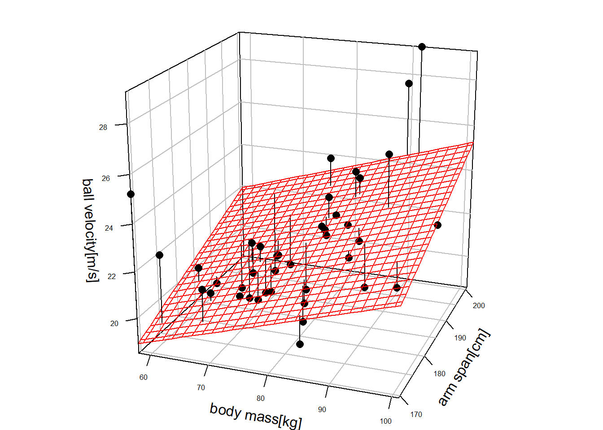
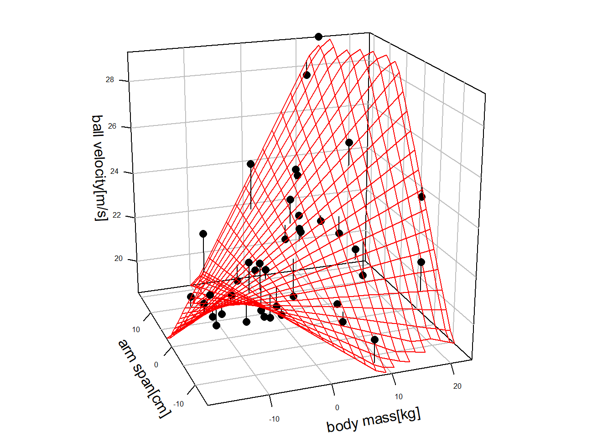

mod_1 <- lm(vel ~ body_mass + arm_span, handball)16 Interaktionseffekte
Bisher haben wir uns additive Effekte angeschaut. D.h. in unserer Modellspezifikation sind die Prädiktorvariablen \(x_i\) immer nur mit einem \(+\) in die Formel eingegangen. Im folgenden werden wir sehen, das das lineare Modell nicht nur auf solche Effekt beschränkt ist, sondern Prädiktorvariablen \(x_i\) auch multiplikativ in die Formel eingehen können.
16.1 Ein Handballbeispiel
Fangen wir mit einem hypothetischen Datensatz zum Handball an. Wir haben drei Datenspalten zur Wurfgeschwindigkeit, der Körpermasse und der Armspannweite und unser Ziel ist es, die Wurfgeschwindigkeit anhand der Körpermasse und der Armspanweite vorherzusagen. Die Fragestellung ist angelehnt an Debanne und Laffaye (2011). Schauen wir uns zunächst die deskriptiven Daten (siehe Tabelle 16.1).
| Mean | Std.Dev | Min | Max | |
|---|---|---|---|---|
| Armspannweite[cm] | 184.29 | 7.72 | 169.43 | 200.74 |
| Körpermasse[kg] | 77.46 | 10.26 | 57.95 | 101.12 |
| Wurfgeschwindigkeit[m/s] | 21.85 | 2.31 | 18.50 | 29.22 |
In Tabelle 16.1 ist zunächst einmal nichts auffallendes zu sehen. Vielleicht sind die Wurfgeschwindigkeiten etwas niedring für Hochleistungshandballer, aber das soll uns nun nicht weiter stören. Schauen wir uns die Daten als Streudiagramme an.
In beiden Graphen ist mit etwas gutem Willen ein positiver Zusammenhang zwischen den jeweiligen Prädiktorvariablen und der Wurfgeschwindigkeit zu identifzieren. Für das Körpergewicht in Abbildung 16.1 (a) vielleicht etwas mehr als für die Armspannweite in Abbildung 16.1 (b).
Versuchen wir nun die Daten mittels eines linearen Modells zu modellieren.
\[\begin{equation*} Y_{i} = \beta_0 + \beta_1 \times \textrm{bm}_i + \beta_2 \times \textrm{as}_i + \epsilon_i \end{equation*}\]
Übersetzt in R und lm() bedeutet dies:
Wenn wir uns die Parameter des Modells ansehen (siehe Tabelle 16.2), dann sehen wir dass die Steigungskoeffizienten zwar knapp statistisch signifikant sind, aber in Bezug auf die Residualvarianz bzw. den Standardfehler \(\hat{\sigma}\) wir eine ziemlich hohe Restunsicherheit haben, die letztendlich Vorhersagen des Modell unbrauchbar macht.
| \(\hat{\beta}\) | \(s_e\) | t | p | |
|---|---|---|---|---|
| (Intercept) | -1.768 | 7.632 | -0.232 | 0.818 |
| body_mass | 0.077 | 0.033 | 2.359 | 0.024 |
| arm_span | 0.096 | 0.044 | 2.192 | 0.035 |
| \(\hat{\sigma}\) | 1.996 |
Der y-Achsenabschnitt \(\beta_0\) im Modell macht auch keinen Sinn, da er verbal übersetzt ausdrücken würde, dass ein Handballer mit \(0\)cm Spannweite und einer Körpermasse von \(0\) Kg eine Wurfgeschwindigkeit von \(v = -1.8\)m/s erreichen würde.
Zentrieren wir die Daten damit die Koeffizienten besser interpretierbar werden. Das ändert zwar nichts an dem Modellfit, aber der y-Achsenabschnitt bekommt dadurch einen sinnvollen Wert. Wie immer beim Zentrieren, ziehen wir von den Prädiktorvariablen den jeweiligen Mittelwert der Variablen ab.
handball <- dplyr::mutate(handball,
body_mass_c = body_mass - mean(body_mass),
arm_span_c = arm_span - mean(arm_span))Fitten wir die Daten nun mittels der zentrierten Variablen.
mod_2 <- lm(vel ~ body_mass_c + arm_span_c, handball)Wie erwartet ändert dies nichts an den Werten, bis auf den y-Achsenabschnitt. Der Wert von \(21.8\) ist jetzt so zu interpretieren, dass ein Handballer mit einer Armspannweite von \(184\)cm und einer Körpermasse von \(77\)Kg eine Wurfgeschwindigkeit von \(21.9\)m/s erreichen sollte (siehe Tabelle 16.1 und Tabelle 16.3).
| \(\hat{\beta}\) | \(s_e\) | t | p | |
|---|---|---|---|---|
| (Intercept) | 21.852 | 0.316 | 69.247 | <0.001 |
| body_mass_c | 0.077 | 0.033 | 2.359 | 0.024 |
| arm_span_c | 0.096 | 0.044 | 2.192 | 0.035 |
| \(\hat{\sigma}\) | 1.996 |
Schauen wir uns als nächstes die Residuen \(e_i\) im zentrierten, additiven Modell (Model 2) an (siehe Abbildung 16.2).
Da die Werte für kleine und große vorhergesagte Werte \(\hat{y}_i\) ganz klar ein Muster anzeigen, können wir davon ausgehen, dass unser Modell eine Struktur der Daten nicht modelliert. Untersuchen wir noch einmal eingehender den Einfluss der Prädiktorvariablen auf die Wurfgeschwindigkeit.
Schauen wir uns einmal an, was passiert, wenn wir eine künstliche Unterteilung der Armspannweiten und Körpermassen in drei verschiedene Kategorien durchführen. D.h. wir unterteilen die Armspannweite in kurze, mittlere und lange Spannweiten und das Gleiche für die Körpermasse in leicht, mittel und schwer. Wir benutzen dazu die cut_number()-Funktion (siehe Doku).
hb_quick <- handball |>
dplyr::mutate(
as_f = cut_number(arm_span_c, 3, labels=c('kurz','mittel','lang')),
bm_f = cut_number(body_mass_c, 3, labels=c('leicht','mittel','schwer'))
) Schauen wir uns die Daten nun wieder mittels eines Graphen an (siehe Abbildung 16.3).

Hier zeigt sich ein interessantes Muster. Für mittel und schwere Handballer nimmt die Wurfgeschwindigkeit mit der Armspannweite zu. Dagegen zeigt sich der gegensätzliche Trend für leichte Handballer. D.h. der Einfluss der Armspannweite hängt davon ab wie schwer der Handballer ist. Der Einfluss ist in der anderen Richtung genause, der Einfluss der Körpermasse hängt von der Armspanweite ab. Wenn sich die Effekte zweier Prädiktorvariablen gegenseitig beeinflussen, dann wird dies als Interaktionseffekts bezeichnet.
16.2 Interaktion zwischen zwei Effekten
Definition 16.1 (Interaktionseffekt) Wenn der Effekt einer unabhängigen Variable auf die abhängige Variable davon abhängt welche Ausprägung eine weitere unabhängige Variable hat, dann wird dies als ein Interaktionseffekt bezeichnet.
Im Rahmen eines linearen Modells, wird ein solcher Interaktionseffekt durch einen multiplikativen Term zwischen den beiden Variablen modelliert.
\[\begin{equation} Y_{i} = \beta_0 + \beta_1 \times \textrm{bm}_i + \beta_2 \times \textrm{as}_i + \beta_3 \times \textrm{bm}_i \times \textrm{as}_i + \epsilon_i \label{mlm-inter-model-ex} \end{equation}\]
In Formel \(\eqref{mlm-inter-model-ex}\) haben wir neben den beiden üblichen Koeffizienten \(\beta_1\) und \(\beta_2\) jetzt einen weiteren Koeffizienten \(\beta_3\). Dessen X-Wert ist das Produkt aus den beiden anderen Prädiktorvariablen \(bm_i \times as_i\). Dies ist der Interaktionseffekt.
Warum die Multiplikation sinnvoll ist, werden wir etwas später genauer betrachten. In R spezifieren wir Interaktionseffekte mittels eines :.
mod_3 <- lm(vel ~ body_mass_c + arm_span_c + body_mass_c:arm_span_c, handball) Wir können auch die Kurzform mittels eines * benutzen.
mod_3 <- lm(vel ~ body_mass_c * arm_span_c, handball) Die Funktion lm() multipliziert Terme der Form A*B in A + B + A:B aus.
Schauen wir uns jetzt den Fit von Modell 3 an (siehe Tabelle 16.4)
| \(\hat{\beta}\) | \(s_e\) | t | p | |
|---|---|---|---|---|
| (Intercept) | 21.346 | 0.143 | 149.296 | <0.001 |
| body_mass_c | 0.119 | 0.015 | 8.133 | <0.001 |
| arm_span_c | 0.083 | 0.019 | 4.380 | <0.001 |
| body_mass_c:arm_span_c | 0.021 | 0.002 | 12.633 | <0.001 |
| \(\hat{\sigma}\) | 0.868 |
Als erstes sehen wir, dass sich die Residualvarianz \(\hat{\sigma}\) mehr als halbiert hat. D.h unser Modell ist schon einmal deutlich präziser geworden. Auch die Standardfehler der beiden Steigungskoeffizienten für die Haupteffekte haben sich deutlich verringert (vgl. Tabelle 16.3). Dementsprechend sind beide Koeffizienten statistisch signifikant. Der neu dazugekommene Koeffizient für den Interaktionseffekt ist ebenfalls statistisch signifikant mit einem sehr kleinen Standardfehler. D.h durch die Hinzunahme des Interaktionseffekt sind in dem vorliegenden Fall in der Lage den Modellfit zunächst einmal zu verbessern.
Jetzt müssen wir nur noch verstehen was die Koeffizienten und insbesondere \(\beta_3\) eigentlich bedeuten. Schauen wir dazu zunächst die Vorhersagen \(\hat{y}_i\) unter den beiden Modellen Modell 2 und Modell 3 an. Zur Erinnerung, beide Modell arbeiten mit zentrierten Prädiktorvariablen. Um einen besseren Überblick über die Vorhersagen zu bekommen, vereinfachen wir die Daten und nehmen nur drei verschiedene Werte für die Armspannweite \(as = \{-10,0,10\}\) cm. D.h. einen hypothetischen Handballer mit der Durchschnittsspannweite, sowie jeweils einen mit \(10\) cm kürzerer bzw. \(10\) cm längerer Spannweite. Wir kombinieren diese drei Werte mit drei verschiedenen Körpermassen \(bm = \{-2,0,2\}\) Kg. D.h. eine durchschnittliche Körpermasse und jeweils \(2\) und \(2\) Kg darüber und darunter. Dies führt zu der folgenden Kombination von Prädiktorvariablen (siehe Tabelle 16.5).
| Armspannweite | Körpermasse |
|---|---|
| -10 | -2 |
| 0 | -2 |
| 10 | -2 |
| -10 | 0 |
| 0 | 0 |
| 10 | 0 |
| -10 | 2 |
| 0 | 2 |
| 10 | 2 |
Berechnen wir jetzt die vorhergesagten Wert \(\hat{y}_i\) unter den beiden verschiedenen Modellen (siehe Abbildung 16.4).

In Abbildung 16.4 (a) sehen wir, dass die vorhergesagten Werte \(\hat{y}_i\) für verschiedene Körpermassen jeweils nur parallel verschoben sind. Da die Unterschiede zwischen den Körpermassen sich um jeweils \(2\) Kg unterscheiden sind für einen gegebenen Wert der Armspannweite die Abstände zwischen den Linien konstant um den Faktor \(\beta_{\text{body mass}} \times 2\). D.h. egal welchen Wert die Armspannweite einnimmt, der Zusammenhang der Körpermasse mit der Wurfgeschwindigkeit bleibt gleich. Diese Art des Zusammenhangs zwischen einer Prädiktorvariable und der abhängigen Variable während die andere Variable konstant gehalten wird, werden als einfache Steigungen bezeichnet.
Unter Modell 3 Dagegen sehen die einfachen Steigung vollkommen anders aus (siehe Abbildung 16.4 (b)). Hier können wir sehen, dass die Unterschiede zwischen den verschiedenen Armspannweiten davon abhängen wie schwer ein Handballer ist. Während bei kleinen Armspannweiten die Unterschiede eher gering sind, werden die Unterschiede zwischen den Gewichtskategorien umso größer je größer die Armspannweite wird. Es handelt sich um einen Interkationseffekt. Wir sehen weiter, dass bei einer Armspannweite von \(-5\) cm es sogar zum schneiden der einfachen Steigungen kommt und entsprechend die Anordnung der Wurfweiten in Abhängigkeit von der Körpermasse sich umkehrt.
Ein Interaktionseffekt ist dabei symmetrisch und hängt nicht davon ab, welche Variable als \(x\)-Variable in dem Graphen verwendet wird. In Abbildung 16.5 sind beide Möglichkeiten einmal nebeneinander dargestellt.

In beiden Fällen beobachten wir den Interaktionseffekt, wobei sich die einfachen Steigungen auf Grund der unterschiedlichen Varianz der Variablen unterscheidet bzw. von deren Einheiten abhängt.
16.3 Koeffizienten im Interaktionsmodell verstehen
Als nächstes Versuchen wir zu verstehen warum die Multiplikation im Model Sinn macht und was die Koeffizienten in Tabelle 16.4 bedeuten. In Abbildung 16.6 sind noch einmal die Steigungen für die Körpermasse in Abhängigkeit von der Armspannweite abgebildet.

Nochmal, wir sehen anhand des Graphen, dass der Zusammenhang zwischen der Wurfgeschwindigkeit und der Körpermasse von der Armspannweite abhängt. In Tabelle 16.6 sind die dazugehörenden Steigungskoeffizienten für die einfachen Steigungen abgebildet. \(\beta_0\) ist der \(y\)-Achsenabschnitt für die jeweiligen Armspannweiten und \(\beta_1\) die jeweiligen Steigungen.
| Armspannweite (zentriert) | \(\beta_0\) | \(\beta_1\) |
|---|---|---|
| 10 | 22.178 | 0.326 |
| 0 | 21.346 | 0.119 |
| -10 | 20.514 | -0.088 |
| betas | |
|---|---|
| b0 | 21.346 |
| bm_c | 0.119 |
| as_c | 0.083 |
| bm_c:as_c | 0.021 |
Fangen wir erst einmal einfach an und setzten die Körpermasse auf \(bm = 0\). D.h. in Abbildung 16.6 bewegen wir uns auf der grünen Linie. Wenn ein Handballer auch eine durchschnittliche Armspannweite hat, also \(as = 0\) dann wird eine Wurfgeschwindigkeit von \(v = 21.346\) vorhergesagt. D.h. \(bm = 0\) und \(as = 0\) also genau der \(y\)-Achsenabschnitt in Modell 3. Nehmen wir jetzt einen Handballer mit durschnittlicher Körpermasse aber einer Armspannweite von \(+10\) cm also \(cm = 10\) dann gehen wir in Abbildung 16.6 entlang der grünen Linie nach oben. In Modellkoeffizienten gesprochen bedeutet dies:
\[\begin{align*} \hat{y} &= 21.346 + 0.119 \cdot 0 + 0.083 \cdot 10 + 0.021 \cdot 0 \cdot 10 \\ &= 21.346 + 0.83 = 22.175 \end{align*}\]
Das ist bis auf ein paar Rundungsfehler der Steigungskoeffizient in Tabelle 16.6 (a) unter \(\beta_0\) und Armspannweite \(=10\). Das gleiche Wenn wir die Armspannweite um \(10\) cm verkürzen.
\[\begin{align*} \hat{y} &= 21.346 + 0.119 \cdot 0 + 0.083 \cdot -10 + 0.021 \cdot 0 \cdot 10 \\ &= 21.346 - 0.83 = 20.516 \end{align*}\]
Schauen wir uns nun die Steigungskoeffizienten in Tabelle 16.6 (a) an. Wenn wir einen Handballer mit einer Armspannweite von \(as = 0\) nehmen, dann haben wir direkt den Koeffizienten in Tabelle 16.6 (b). Die Wurfgeschwindigkeit verändert sich somit mit der Körpermasse über den Koeffizienten \(\beta_{bm_c} = 0.119\). Denn eingesetzt in die Modellgleichung erhalten wir:
\[\begin{align*} \hat{y} &= 21.346 + 0.119 \cdot bm_c + 0.083 \cdot 0 + 0.021 \cdot bm_c \cdot 0 \\ &= 21.346 + 0.119 \cdot bm_c \end{align*}\]
Was passiert nun, wenn beide Prädiktorvariablen \(as\neq 0\) und \(bm\neq 0\) sind. Sei zum Beispiel \(as = 10\). Wie verändert sich der vorhergesagte Wert \(\hat{y}_i\) mit der Körpermasse \(bm_c\). Wir lassen \(bm_c\) jetzt offen als Variable um die Steigungsgleichung zu bestimmen. Wieder eingesetzt in das Modell ergibt dies:
\[\begin{align*} \hat{y} &= 21.346 + 0.119 \cdot bm_c + 0.083 \cdot 10 + 0.021 \cdot bm_c \cdot 10 \\ &= 21.346 + 0.83 + 0.119 \cdot bm_c + 0.21 \cdot bm_c \\ &= 22.175 + (0.119 + 0.21) \cdot bm_c \\ &= 22.175 + 0.329 \cdot bm_c \end{align*}\]
D.h. wir erhalten, bis auf ein paar Rundungsfehler, die Steigungskoeffizienten der Geradengleichung in Tabelle 16.6 (a).
Übungsaufgabe 16.1 Versuche anhand der Koeffizienten in Tabelle 16.6 (b) die einfache Steigungsgleichung für \(as_c = -10\) zu erhalten.
16.3.1 Zusammenfassung
Zusammenfassend lässt sich die folgende Interpretation der Koeffizienten in einem Interaktionsmodell mit zwei Prädiktorvariablen formulieren.
\[\begin{equation*} Y = b_0 + b_1 \cdot x_1 + b_2 \cdot x_2 + b_3 \cdot x_1 \cdot x_2 + \epsilon_i \end{equation*}\]
- \(b_0\): (y-Achsenabschnitt) der Wert von \(\hat{Y}\) wenn \(x_1 = 0\) und \(x_2 = 0\) gilt.
- \(b_1\): Der Unterschied in \(\hat{Y}\) wenn zwei Objekte sich in \(x_1\) um eine Einheit unterscheiden und \(x_2 = 0\) ist.
- \(b_2\): Der Unterschied in \(\hat{Y}\) wenn zwei Objekte sich in \(x_2\) um eine Einheit unterscheiden und \(x_1 = 0\) ist.
- \(b_3\): (Interaktionskoeffizient) Die Veränderung des Effekts von \(x_1\) auf \(\hat{Y}\) wenn \(x_2\) um eine Einheit größer wird bzw. genau andersherum für \(x_2\).
16.4 Vergleich additives Modell mit dem Interaktionsmodell
Schauen wir nun noch einmal an, wie sich die gefitteten Flächen der beiden Modell voneinander unterscheiden. In Abbildung 16.7 sind die gefitten Flächen und die Residuen unter den beiden Modell abgebildet.


Die gefitte Oberfläche ist jetzt keine Ebene mehr, sondern die Hinzunahme des Interaktionseffekts hat dazu geführt, dass die Oberfläche jetzt eher einem Sattel ähnelt. D.h. durch die Interaktionseffekte können wir deutlich komplizierte Zusammenhänge zwischen den Prädiktorvariablen und der abhängigen Variable modellieren. Die Komplexität erhöht sich entsprechend mit der Zahl der Prädiktorvariablen und den möglichen Interaktion zwischen diesen.
Zurückkommend auf unser Ausgangsbeispiel. Wie hat sich die Hinzunahme des Interaktionseffekts eigentlich auf den Modellfit ausgewirkt. Vergleichen wir die beiden Residuenplots dazu (siehe Abbildung 16.8).
Wir sehen in Abbildung 16.8 (b) das die Struktur, die wir im additiven Modell in Abbildung 16.8 (a) in den Residuen beobachtet haben, nun nicht mehr vorhanden ist. Ähnlich verhält sich auch der Vergleich für die die qq-Plots der Residuen (siehe Abbildung 16.9).
Schauen wir uns noch die verbleibenden Performanceparameter an.
| Name | Model | R2 | R2_adjusted | RMSE | Sigma |
|---|---|---|---|---|---|
| mod_2 | lm | 0.291 | 0.252 | 1.919 | 1.996 |
| mod_3 | lm | 0.869 | 0.859 | 0.824 | 0.868 |
Insgesamt sind durch die Hinzunahme des Interaktionseffekt nicht nur die Standardfehler und der Residualfehler verringert worden, sondern das Modell fittet die Daten auch deutlich besser als das additive Modell. Dies ist natürlich nicht immer der Fall, sondern hängt eng mit den jeweiligen Daten zusammen.
16.5 Take-away
Das Interaktionsmodell:
- Erhöht die Flexibilität des linearen Modells.
- Bei Interaktionen hängt der Einfluss der einzelnen Variablen immer von den Werten der anderen Variablen ab.
- Achtung: Interpretation der einfachen Haupteffekte oft nicht mehr möglich bzw. sinnvoll!
16.6 Einfluss der Zentrierung auf die Koeffizienten im Interaktionsmodell (advanced)
Schauen wir uns noch zum Abschluss noch an, was algebraisch mit dem Koeffizienten im Interaktionsmodell passiert wenn die Prädiktorvariablen \(x_{ki}\)s zentriert werden.
\[\begin{align*} y_i &= \beta_0 + \beta_1 (x_{1i} - \bar{x}_1) + \beta_2 (x_{2i} - \bar{x}_2) + \beta_3 (x_{1i}-\bar{x}_1)(x_{2i}-\bar{x}_2) \\ &= \beta_0 + \beta_1 x_{1i} - \beta_1 \bar{x}_1 + \beta_2 x_{2i} - \beta_2 \bar{x}_2 + \beta_3 x_{1i} x_{2i} - \beta_3 x_{1i} \bar{x}_2 - \beta_3 \bar{x}_1 x_{2i} + \beta_3 \bar{x}_1 \bar{x}_2 \\ &= \beta_0 - \beta_1 \bar{x}_1 - \beta_2 \bar{x}_2 + \beta_3 \bar{x}_1 \bar{x}_2 + \beta_1 x_{1i}- \beta_3 \bar{x}_2 x_{1i} + \beta_2 x_{2i} - \beta_3 \bar{x}_1 x_{2i} + \beta_3 x_{1i} x_{2i} \\ &= \underbrace{\beta_0 - \beta_1 \bar{x}_1 - \beta_2 \bar{x}_2 + \beta_3 \bar{x}_1 \bar{x}_2}_{\beta_0} + \underbrace{(\beta_1 - \beta_3 \bar{x}_2) x_{1i}}_{\beta_1 x_{1i}} + \underbrace{(\beta_2 - \beta_3 \bar{x}_1) x_{2i}}_{\beta_2 x_{2i}} + \beta_3 x_{1i} x_{2i} \end{align*}\]
Wir sehen, dass der Interaktionsterm tatsächlich gleich ist unter beiden Modellen. Dagegen unterscheiden sich die Koeffizienten der Haupteffekte deutlich voneinander. Der Übergang vom zentrierten zum unzentrierten Modell ist dabei nicht immer gleich, sondern hängt von den jeweiligen Werten dern Daten ab.
16.7 Zum Nacharbeiten
Kutner u. a. (2005, p.306–313)